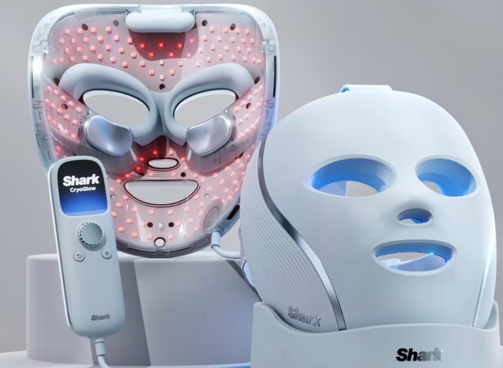
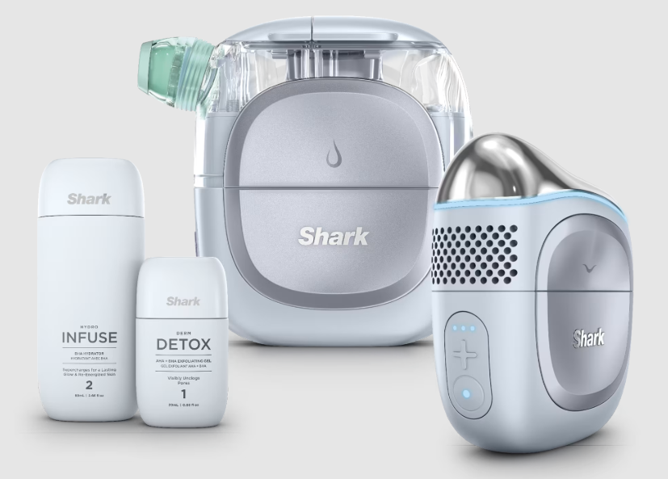

Photobiomodulation

Objectives and Contributions
- Co-designed a pilot dermatology clinical trial on LED anti-aging therapy, analyzing patient outcomes and translating results into engineering specs and future product claims for executive decision-making.
- Characterized heat generation and circuit efficiency across multiple LED FPC designs, developing thermal management strategies to prevent skin overheating and hyperpigmentation during clinical use.
- Collaorated cross-functionally with industrial designers and regulatory teams to meet ISO and FDA consumer safety standards.
- Defined KPIs for product efficacy and safety by collaborating with dermatologists and academic experts, synthesizing clinical literature into technical reports that influenced strategic R&D priorities
Technical Challenges
Leadership Highlights
Skills
skill
skill
skill
Publications & Links
Awards
- 🧠 Led a 5-person R&D sub-team driving clinical validation and worked directly with external dermatological labs.
- 🎤 Presented final product design and functional testing results to the CEO and executive leadership team.
- 🏆 Delivered product from prototype to launch in under 9 months, now publicly available in U.S. and international markets.
Facial Pro Glo

Objectives and Contributions
- Conducted root cause analysis, using fluid mechanics to decide small pump system architectures for flow and vacuum. Built early stage proof of concepts and prototypes to perform user tests on volunteers, measuring on-skin biophysical properties to determine performance
- Built Python-based pipelines to analyze skin reflectance and under-eye pigmentation under cross-polarized vs. standard light, enabling objective quantification of therapeutic effects
Technical Challenges
Leadership Highlights
Skills
skill
skill
skill
Publications & Links
Awards
- 🧠 Led a 5-person R&D sub-team driving clinical validation and worked directly with external dermatological labs.
- 🎤 Presented final product design and functional testing results to the CEO and executive leadership team.
- 🏆 Delivered product from prototype to launch in under 9 months, now publicly available in U.S. and international markets.